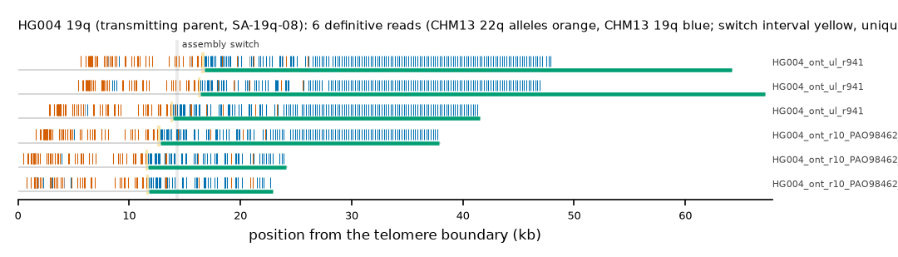

HG004 19q (transmitting_parent (HG002 maternal)): SA-19q-08
Claim HG004|HG002#2#chr19_MATERNAL#R. All claims
- cohort
- HG003/HG004 (trio)
- individual
- HG004
- haplotype
- transmitting_parent (HG002 maternal)
- arm
- 19q
- allele
- SA-19q-08 (foreign)
- model
- donor CHM13 22q, proximal CHM13 19q, recipient CHM13 19q, pattern DP
- claimed end(s)
HG002#2#chr19_MATERNAL#R- assembly switch
- 14,270 bp from the telomere boundary; on CHM13 chr19:61694373; own-window projection 14189-14443 bp
- v1 verdict
- confirmed (transmitting_parent)
- definitive tier
- definitive (>= 2 datasets)
- reads
- 6 conclusive switch-concordant, 0 discordant, 4 contradicting, 31 consistent; 6 definitive (HG004_ont_r10_PAO98462_947941d1,HG004_ont_r10_PAO98462_c3dbcd08,HG004_ont_ul_r941)
- by tier
- definitive:6;consistent:31;contradicts:4
- source
- GIAB HG003/HG004 public long-read alignments (HiFi on CHM13 v2.0; ONT on GRCh38)

Conclusive and contradicting reads (10)
31 further reads are consistent (switch test passed, but no terminal telomere, anchor or integrity); they are
listed in reads.tsv.gz. Switch: 95% interval in subtelomere coordinates (kb from the
telomere boundary) and projected on CHM13 19q. Each samtools command prints the read's record
from its public file (CRAM: add the CHM13 v2.0 FASTA as -T).
| read | dataset | tier | length | switch (subtelomere, kb) | switch on CHM13 | donor units / purity | proximal units / purity | anchor (CHM13, MAPQ, unique) | own-assembly best end | fetch |
|---|---|---|---|---|---|---|---|---|---|---|
e9f18cbc-d0cc-492c-ad3c-a426a3491ae6 | HG004_ont_r10_PAO98462_947941d1 | definitive | 25,348 | 11.4-11.7 | chr19:61694201-61694456 | 57 / 0.98 | 62 / 0.92 | chr19:61681902-61694201, 60, 7.4 kb | HG002#2#chr19_MATERNAL#R (98.7%) ✓ | samtoolssamtools view -F 0x900 -T GRCh38_no_alt_analysis_set.fa -X 'https://ont-open-data.s3.amazonaws.com/giab_2023.05/analysis/hg004/sup/PAO98462_947941d1.pass.cram' 'https://ont-open-data.s3.amazonaws.com/giab_2023.05/analysis/hg004/sup/PAO98462_947941d1.pass.cram.crai' 'chr19:58560347-58607616' | awk -v r='e9f18cbc-d0cc-492c-ad3c-a426a3491ae6' '$1==r' |
5237ac01-c2b5-4403-8d44-b40ffa886ba5 | HG004_ont_r10_PAO98462_c3dbcd08 | definitive | 39,122 | 12.5-12.8 | chr19:61694201-61694456 | 58 / 0.98 | 127 / 0.96 | chr19:61669108-61694201, 60, 20.2 kb | HG002#2#chr19_MATERNAL#R (98.4%) ✓ | samtoolssamtools view -F 0x900 -T GRCh38_no_alt_analysis_set.fa -X 'https://ont-open-data.s3.amazonaws.com/giab_2023.05/analysis/hg004/sup/PAO98462_c3dbcd08.pass.cram' 'https://ont-open-data.s3.amazonaws.com/giab_2023.05/analysis/hg004/sup/PAO98462_c3dbcd08.pass.cram.crai' 'chr19:58560347-58607616' | awk -v r='5237ac01-c2b5-4403-8d44-b40ffa886ba5' '$1==r' |
8949ca43-3c88-4665-a700-48a1e8462df4 | HG004_ont_r10_PAO98462_c3dbcd08 | definitive | 23,718 | 11.5-11.8 | chr19:61694201-61694442 | 53 / 0.87 | 56 / 0.86 | chr19:61682862-61694201, 60, 6.4 kb | HG002#2#chr19_MATERNAL#R (91.3%) ✓ | samtoolssamtools view -F 0x900 -T GRCh38_no_alt_analysis_set.fa -X 'https://ont-open-data.s3.amazonaws.com/giab_2023.05/analysis/hg004/sup/PAO98462_c3dbcd08.pass.cram' 'https://ont-open-data.s3.amazonaws.com/giab_2023.05/analysis/hg004/sup/PAO98462_c3dbcd08.pass.cram.crai' 'chr22:50803469-50808468' | awk -v r='8949ca43-3c88-4665-a700-48a1e8462df4' '$1==r' |
3c8a5973-a761-412b-8219-8d96555b3cd3 | HG004_ont_ul_r941 | definitive | 67,516 | 16.2-16.4 | chr19:61694201-61694444 | 55 / 0.93 | 149 / 0.96 | chr19:61641991-61694201, 60, 47.3 kb | HG002#2#chr19_MATERNAL#R (89.1%) ✓ | samtoolssamtools view -F 0x900 -X 'https://ftp-trace.ncbi.nlm.nih.gov/ReferenceSamples/giab/data/AshkenazimTrio/HG004_NA24143_mother/UCSC_Ultralong_OxfordNanopore_Promethion/HG004_GRCh38_ONT-UL_UCSC_20200508.bam' 'https://ftp-trace.ncbi.nlm.nih.gov/ReferenceSamples/giab/data/AshkenazimTrio/HG004_NA24143_mother/UCSC_Ultralong_OxfordNanopore_Promethion/HG004_GRCh38_ONT-UL_UCSC_20200508.bam.bai' 'chr19:58560347-58607616' | awk -v r='3c8a5973-a761-412b-8219-8d96555b3cd3' '$1==r' |
4761a080-969e-4399-97d5-ddf2c0c4f2af | HG004_ont_ul_r941 | definitive | 64,680 | 16.5-16.7 | chr19:61694201-61694453 | 55 / 0.98 | 156 / 0.96 | chr19:61645505-61694201, 60, 43.8 kb | HG002#2#chr19_MATERNAL#R (91.7%) ✓ | samtoolssamtools view -F 0x900 -X 'https://ftp-trace.ncbi.nlm.nih.gov/ReferenceSamples/giab/data/AshkenazimTrio/HG004_NA24143_mother/UCSC_Ultralong_OxfordNanopore_Promethion/HG004_GRCh38_ONT-UL_UCSC_20200508.bam' 'https://ftp-trace.ncbi.nlm.nih.gov/ReferenceSamples/giab/data/AshkenazimTrio/HG004_NA24143_mother/UCSC_Ultralong_OxfordNanopore_Promethion/HG004_GRCh38_ONT-UL_UCSC_20200508.bam.bai' 'chr19:58560347-58607616' | awk -v r='4761a080-969e-4399-97d5-ddf2c0c4f2af' '$1==r' |
21ca37f1-e9d9-4837-89da-e85164c24854 | HG004_ont_ul_r941 | definitive | 45,457 | 13.7-13.9 | chr19:61694201-61694457 | 55 / 0.96 | 139 / 0.95 | chr19:61666423-61694201, 60, 22.8 kb | HG002#2#chr19_MATERNAL#R (93.4%) ✓ | samtoolssamtools view -F 0x900 -X 'https://ftp-trace.ncbi.nlm.nih.gov/ReferenceSamples/giab/data/AshkenazimTrio/HG004_NA24143_mother/UCSC_Ultralong_OxfordNanopore_Promethion/HG004_GRCh38_ONT-UL_UCSC_20200508.bam' 'https://ftp-trace.ncbi.nlm.nih.gov/ReferenceSamples/giab/data/AshkenazimTrio/HG004_NA24143_mother/UCSC_Ultralong_OxfordNanopore_Promethion/HG004_GRCh38_ONT-UL_UCSC_20200508.bam.bai' 'chr19:58560347-58607616' | awk -v r='21ca37f1-e9d9-4837-89da-e85164c24854' '$1==r' |
16ec6239-6de9-40a8-92c0-76fcb73e78b7 | HG004_ont_r10_PAO98462_78a9a38d | contradicts | 46,926 | 1.6-1.6 | chr19:61704378-61704397 | 1 / 0.00 | 218 / 0.97 | chr19:61660987-61692163, 60, 27.3 kb | samtoolssamtools view -F 0x900 -T GRCh38_no_alt_analysis_set.fa -X 'https://ont-open-data.s3.amazonaws.com/giab_2023.05/analysis/hg004/sup/PAO98462_78a9a38d.pass.cram' 'https://ont-open-data.s3.amazonaws.com/giab_2023.05/analysis/hg004/sup/PAO98462_78a9a38d.pass.cram.crai' 'chr19:58560347-58607616' | awk -v r='16ec6239-6de9-40a8-92c0-76fcb73e78b7' '$1==r' | |
ca689629-86dc-4904-a4eb-b3d75b0a0ecf | HG004_ont_ul_r941 | contradicts | 57,769 | 0.6-1.0 | chr19:61703999-61704378 | 1 / 0.00 | 200 / 0.97 | chr19:61646271-61690708, 60, 40.5 kb | samtoolssamtools view -F 0x900 -X 'https://ftp-trace.ncbi.nlm.nih.gov/ReferenceSamples/giab/data/AshkenazimTrio/HG004_NA24143_mother/UCSC_Ultralong_OxfordNanopore_Promethion/HG004_GRCh38_ONT-UL_UCSC_20200508.bam' 'https://ftp-trace.ncbi.nlm.nih.gov/ReferenceSamples/giab/data/AshkenazimTrio/HG004_NA24143_mother/UCSC_Ultralong_OxfordNanopore_Promethion/HG004_GRCh38_ONT-UL_UCSC_20200508.bam.bai' 'chr19:58560347-58607616' | awk -v r='ca689629-86dc-4904-a4eb-b3d75b0a0ecf' '$1==r' | |
255d3b07-3366-4e1d-8d25-cd9f2daaecf9 | HG004_ont_ul_r941 | contradicts | 52,331 | 4.5-4.5 | chr19:61703983-61703999 | 1 / 0.00 | 139 / 0.92 | chr19:61675292-61694233, 60, 14.0 kb | samtoolssamtools view -F 0x900 -X 'https://ftp-trace.ncbi.nlm.nih.gov/ReferenceSamples/giab/data/AshkenazimTrio/HG004_NA24143_mother/UCSC_Ultralong_OxfordNanopore_Promethion/HG004_GRCh38_ONT-UL_UCSC_20200508.bam' 'https://ftp-trace.ncbi.nlm.nih.gov/ReferenceSamples/giab/data/AshkenazimTrio/HG004_NA24143_mother/UCSC_Ultralong_OxfordNanopore_Promethion/HG004_GRCh38_ONT-UL_UCSC_20200508.bam.bai' 'chr19:58560347-58607616' | awk -v r='255d3b07-3366-4e1d-8d25-cd9f2daaecf9' '$1==r' | |
96ab40cb-ac88-4f50-928e-508d6ed08be1 | HG004_ont_ul_r941 | contradicts | 33,516 | 6.6-6.6 | chr19:61704378-61704397 | 1 / 0.00 | 124 / 0.92 | chr19:61678893-61696816, 60, 13.0 kb | samtoolssamtools view -F 0x900 -X 'https://ftp-trace.ncbi.nlm.nih.gov/ReferenceSamples/giab/data/AshkenazimTrio/HG004_NA24143_mother/UCSC_Ultralong_OxfordNanopore_Promethion/HG004_GRCh38_ONT-UL_UCSC_20200508.bam' 'https://ftp-trace.ncbi.nlm.nih.gov/ReferenceSamples/giab/data/AshkenazimTrio/HG004_NA24143_mother/UCSC_Ultralong_OxfordNanopore_Promethion/HG004_GRCh38_ONT-UL_UCSC_20200508.bam.bai' 'chr19:58560347-58607616' | awk -v r='96ab40cb-ac88-4f50-928e-508d6ed08be1' '$1==r' |
Files
CRAM/BAM on CHM13 v2.0, BAM on the person's own assembly windows and the window FASTA: release asset subtel_read_evidence_v1_HG002_trio.tar.gz, directory read_evidence_v1/HG002_trio/HG004__HG002_2_chr19_MATERNAL_R/ (downloads).
Re-derive this verdict
git clone https://github.com/jlanej/human-subtelomere-atlas && cd human-subtelomere-atlas
evidence/replicate_claim.sh 'HG004|HG002#2#chr19_MATERNAL#R'The script fetches the cited reads from the public source by region and read ID, re-runs the frozen criteria and compares every per-read and claim verdict with this page (details).